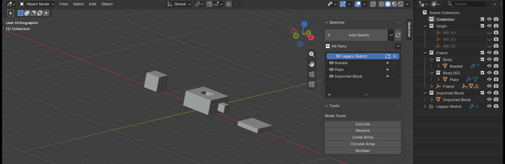
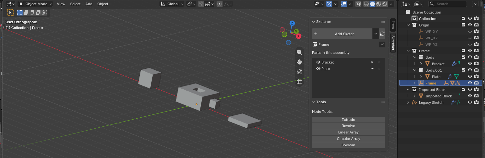
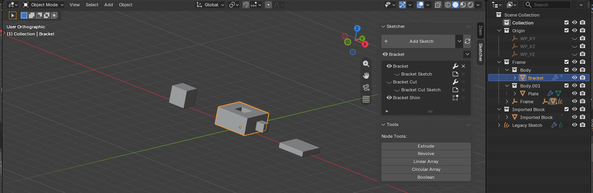
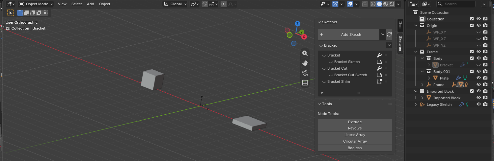

Parts and Assemblies
A part is one thing you can move: a body with the sketches and workplanes that define it. A body is a real mesh, so a part exports and edits like any other object.
An assembly is a group of parts moved as a whole.
Both are plain object parenting, so the outliner shows the real structure.
The part list
The Sketcher panel lists what you are working on. It follows the active object: one part, one assembly, or the whole file.
The row above the list is always there. It shows what the list is scoped to, whether it is visible, and a menu of everything that acts on it.
No part active: every part in the file

One row per part, plus anything belonging to no part. The row's eye hides the part; its button opens the part, since a part has no single sketch to open.
An assembly active: the parts in it

A part active: what it is made of

Each feature takes two rows: the feature, and indented beneath it the sketch it was drawn from. They are two things to show or hide, so they get an eye each.
| Row | Eye | Button | Cross |
|---|---|---|---|
| Feature | Its solid. A cutter is hidden while it cuts, so there the eye brings it back as a wireframe | Edit Feature | Deletes the feature, both rows |
| Its sketch | The sketch's curves | Edit the sketch | None: the feature's cross takes it |
| The base feature | As above | As above | Deletes the whole part |
| A mesh never drawn | Its solid | Blender's Edit Mode | Deletes the feature |
A hidden cutter cannot be clicked in the viewport, so its row is the only way to reach it.
Edit Feature
The wrench opens what the feature was made with: extrude size, revolve angle, boolean operation and solver.
A boolean lives on the body being cut, not on the cutter, so it is not in the cutter's own modifier stack. The popup gathers both and names the body each sits on.
Hiding

Every eye acts on its own row, so a part, one of its features and a sketch are three separate controls. Hiding a part hides everything in it, and the part stays in the panel so the same eye brings it back.
The Part menu
The arrow above the list, also on the viewport right-click menu and in the outliner.
| Command | Does |
|---|---|
| Make Part | Roots a part in the active object; anything else selected joins it |
| Add Assembly | Groups the selected parts; with nothing selected, an empty one at the cursor |
| Duplicate Part | An independent copy, with the cutters that shape it (Shift+D) |
| Instance Part | Another placement of the same part (Alt+D) |
| Remove from Part | Takes the active object out, where it stands |
| Dissolve Part | Takes a part apart, keeping every object in it |
| Delete Feature | One step off a part: solid, sketch, boolean |
| Delete Part | The part, its cutters and any placement of it |
| Delete Assembly | An assembly and the parts in it |
Blender's own Delete takes only the object you clicked, which leaves a part's cutters behind and the part rooted in one of them. These take whole things.
Turn the Shift+D / Alt+D shortcuts off in the add-on preferences to keep
Blender's own.
What belongs to what
Membership is never a mode. It follows from what you drew on, settled when the sketch becomes solid.
| You do this | Result |
|---|---|
| Sketch on a body's face or a part's workplane | Joins that part |
| Sketch on a global XY/XZ/YZ plane | Stays global: no part |
| Extrude or revolve with nothing to cut | Roots a part of its own |
| Extrude or revolve that cuts a body | Joins that body's part, as a cut |
| A cut reaching several parts | Belongs to none; if they share an assembly, it joins that |
A cut travels with the body it cuts: left behind, moving the body would silently change the result.
To override, parent by hand. Ctrl+P in the viewport, or Shift-drag in the
outliner (a plain drag only changes collections, which decides nothing).
Moving a part
In Object Mode, select the body and press G or R. Its sketches, workplanes
and cutters follow.
Scale is locked: the solver reads a sketch's plane as a rigid frame, so a scaled part would draw and solve at different sizes.
In the outliner
Collections group each part; objects nest under what carries them.
- Scene Collection
- Origin — the shared XY / XZ / YZ datum planes
- Bracket — an assembly collection
- Plate — a part collection
- Plate — the body: a mesh, carrying the features
- Plate XY — the plane its sketch was drawn on
- Plate Sketch — the source the body is built from
- Plate XZ, Plate YZ — made when first offered
- Workplane — on a face of Plate
- Plate.001 — a cutter, with its sketch beneath it
- Plate XY — the plane its sketch was drawn on
- Plate — the body: a mesh, carrying the features
- Plate — a part collection
Read the nesting, not the collections: Plate.001 is part of Plate because it
hangs under it. Collections follow that structure, they do not define it.
Collections are maintained for you. Never exclude one from the view layer: that stops evaluation and drops the sketch fill. Hide objects instead.
Renaming the body renames its sketch and planes with it.
Part workplanes
A part's XY is the plane its first sketch was drawn on; XZ and YZ appear the first time the picker offers them.
Select a part and Add Sketch offers its planes in place of the scene's, so a moved or rotated part is sketched in its own frame. Deselect for the scene's, which is how you start a new part.
Sketching on a face makes a workplane for that face. A part's feature workplanes are not offered again: pick the face instead.
Copying
Duplicate Part copies the whole part and is independent. Instance Part places the same part again: there is still one part, so editing it updates every placement.
Placements hold no geometry and are not edited where they stand. A placement joins whatever assembly the part is in.
Cutter display
| State | Means |
|---|---|
| Hidden | Cutting a body in its own part: its solid would sit over the result |
| Wireframe | Cutting across parts, or meaning to cut but reaching nothing |
| Shaded | No boolean: it is simply a body |
Older files
Sketches saved before parts existed keep working but cannot be moved as parts
until the file is updated. Run Update File (F3), or take the offer the
Sketcher panel makes. It is never automatic: it restructures the file.